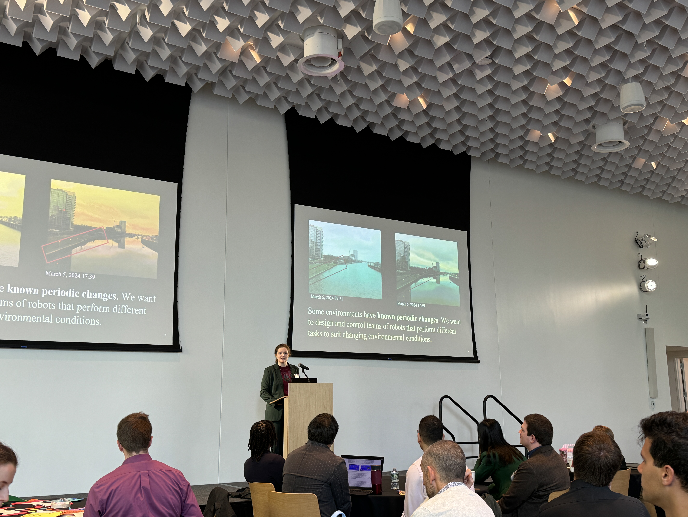
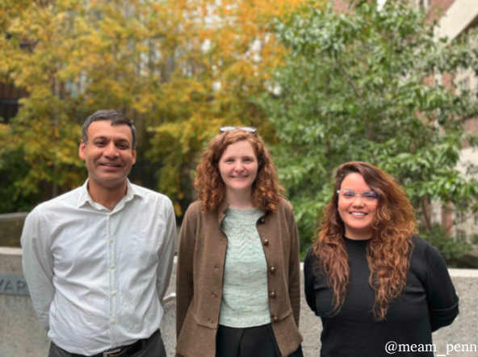
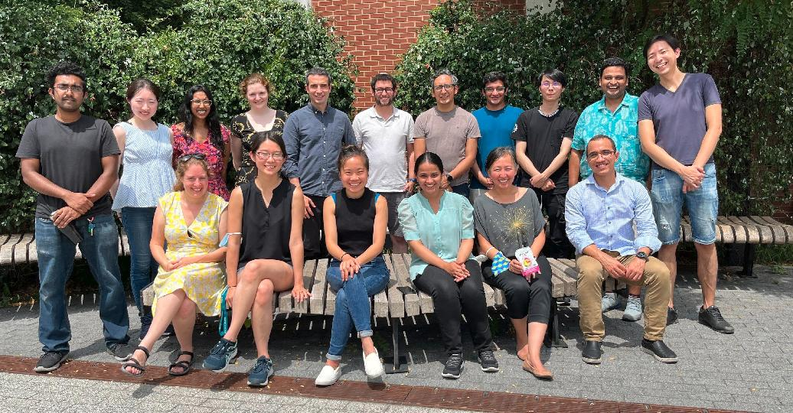

Victoria M Edwards
PhD Candidate in ScalAR Lab . GRASP Lab . School of Engineering and Applied Science . University of Pennsylvania.

Pennovation Center
3401 Grays Ferry Avenue
Philadelphia, PA 19146
I am an experimental roboticist working at the intersection of Robotics, Complex Systems Theory and Dynamical Systems Theory. I have interests in the full range of multi robot systems, including robot teams with sophisticated capabilities and coordinated task strategies, as well as large scale collectives demonstrating emergent behavior. Throughout my research I have experimented with unmanned ground vehicles (UGVs), unmanned aerial vehicles (UAVs), and unmanned surface vehicles (USVs). To increase our understanding of ongoing environmental changes, it will be important to use heterogeneous robot teams to capture data at different space and times scales. My research objective is to combine environment models with models from Complex Systems theory to control robot teams monitoring dynamic environments. Throughout my dissertation, I have made contributions to solving the multi robot task allocation problem for robot teams deployed in dynamic environments. Our results demonstrate the power of complex systems theory for analyzing robotic systems to enable increased scalability and flexibility for operating in uncertain and dynamic environments. Overall, two themes emerge in my research.
1) How do we design and coordinate multi robot systems to perform missions in uncertain and dynamic environments? and
2) How do we use robot teams to help understand natural phenomena, e.g., changing water temperatures.
I hope increasing the capability of multi robot systems results in tools that can contribute to improving our climate resiliency.
I am currently a PhD candidate at the University of Pennsylvania, Mechanical Engineering and Applied Mechanics Department (MEAM). I work in the Scalable Autonomous Robotics Lab with Dr. Ani Hsieh as a member of the GRASP Lab. Prior to my PhD I was a Karles Fellow working as an Autonomous Systems Scientist at the US Naval Research Lab. I recieved my Masters of Science in Robotics from the University of Michigan, and I recieved my Bachelors of Arts in Computer Science and Mathematics from Colby College. When I am not working to improve robot teams you can find me walking my corgi, knitting, or baking cakes.
news
| Oct 30, 2024 |
Our paper was accepted and presented at DARS 2024 titled: “A Macroscopic Ensemble Modeling Approach to Collaborative Task Assignment in Dynamic Environments”

Photo taken by Danna Ma on October 30 at Cornell Tech, NYC
|
|---|---|
| May 15, 2024 | I was awarded the University of Pennsylvania School of Engineering and Applied Sciences (SEAS) Outstanding Teaching Award, May 2024. |
| Oct 5, 2023 | Come to our workshop “Robotics for the Blue Economy and Climate Resiliency” at IROS 2023 in Detroit Michigan. Program starts at 0830 - 1730 and includes outstanding speakers, poster presentations, networking opportunities and much more! For more information about the workshop look here. |
| Oct 4, 2023 | Our paper was accepted and presented at IROS 2023 in Detroit, Michigan. Titled: “On Collaborative Robot Teams for Environmental Monitoring: a Macroscopic Ensemble Approach” |
| May 11, 2023 |
I was awarded the University of Pennsylvania School of Engineering and Applied Sciences (SEAS) Outstanding Teaching Award, May 2023.
|
| Nov 30, 2022 | Our paper was accepted and presented at DARS 2022 titled: “Stochastic Nonlinear Ensemble Modeling and Control for Robot Team Environmental Monitoring” |
| Nov 7, 2022 |
I was awarded MEAM Department Spring 2022 Outstanding TA Award. Presented by Dr. Prashant Purohit, and nominated by Dr. Nadia Figueroa for work done in MEAM 520: Introduction to Robotics
 |
| Aug 10, 2022 |
ScalAR Lab Group Summer 2022
 |
| May 24, 2022 | ScalAR Lab Demos for ICRA 2022 in Philadelphia |
| May 1, 2021 | I was awarded the NDSEG Fellowship, 2021 Cohort |
selected publications
-
Delay induced swarm pattern bifurcations in mixed reality experimentsChaos: An Interdisciplinary Journal of Nonlinear Science 2020
-
On Collaborative Robot Teams for Environmental Monitoring: A Macroscopic Ensemble ApproachIn IEEE/RSJ International Conference on Intelligent Robots and Systems (IROS) 2023
-
A Macroscopic Ensemble Modeling Approach to Collaborative Task Assignment in Dynamic Environments17th International Symposium on Distributed Autonomous Robotic Systems (DARS) 2024